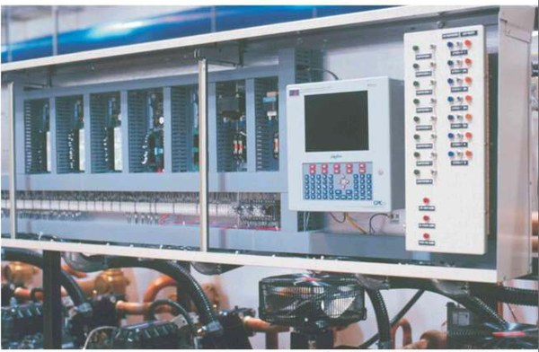

Commercial refrigeration on rack systems.
Izhar Foster makes cold stores from −35 °C to 0 °C on a turnkey basis with optimised cost and minimum energy consumption. The rack is programmed to control operating times, temperatures, priorities and alarms for simple, safe and reliable management. Rack systems supplied by Heatcraft, USA.

What a rack actually is
Refrigeration racks are custom assemblies featuring multiple, parallel-piped compressors. They are designed, engineered and built to fit a unique refrigeration requirement — not selected from a catalogue and made to fit afterwards. Racks are available for both indoor and outdoor applications, and can be used with air-cooled, water-cooled or evaporative-cooled condensers.
Why a rack beats a bank of condensing units
Rack systems have several key features that allow for optimised performance compared to traditional condensing unit systems:
- Large capacity in a compact footprint
- Compressor staging for capacity control
- Single point wiring and piping
- Design flexibility
- Can control up to 3 suction groups
- 3–8 compressors on one frame
- Intelligent system microprocessor control
- Compressor combination up to 320 hp
The one that matters most in practice is compressor staging. A cold store almost never runs at design load — it runs at part load nearly all the time. A rack meets that by bringing compressors on and off in stages, where a single large unit would cycle. Staging is why the energy figures separate over a year, not over a day.
Single-point wiring and piping
Eight compressors on one frame means one electrical connection, one suction header and one discharge header rather than eight of each. That shortens commissioning, reduces the number of joints that can leak, and gives a technician one place to stand when something needs attention — a real consideration where specialist support is thin.
Where it sits
Rack systems suit roughly 200 to 500 kW. Above that, ammonia or ammonia-glycol wins on lifetime cost; below it, a CDU pack is more economical. All three are covered under industrial & commercial refrigeration.

Why staging is the whole argument
A cold store is sized for its worst hour and then spends almost none of its life there. Pull-down after a delivery, a hot afternoon with the dock doors working, a defrost cycle — those set the design load. The other 90% of the year the store is holding temperature against nothing more than transmission through the panels and a few door openings.
A single large compressor meets that by cycling: running at full load, satisfying the thermostat, stopping, and starting again. Every start is an inrush, every stop loses the oil and refrigerant migration battle a little, and the average efficiency across a year is well below the figure on the datasheet. A rack meets it by staging — bringing 1 of 8 compressors on, then 2, then 3 — so the machine tracks the load instead of chopping at it. That is where the annual energy difference between a rack and a bank of condensing units actually comes from, and it is why the comparison should never be made at design load.
Choosing the condenser at Pakistani ambient
Racks pair with air-cooled, water-cooled or evaporative-cooled condensers, and the choice is a site decision more than a preference:
- Air-cooled — no water, lowest maintenance, but the most exposed to ambient. Capacity falls at roughly 2.0% per Kelvin at medium temperature and 2.7% per Kelvin at low temperature, so a 46–50 °C design day costs real capacity against a European rating.
- Evaporative — condenses far closer to wet-bulb than dry-bulb, which is a large advantage in a dry summer. Needs water treatment and a maintenance regime that will actually be followed.
- Water-cooled — best head pressure control where a cooling-tower or process-water loop already exists on site. Rarely worth building a water system for the cold store alone.
Head pressure control matters as much as the selection. A rack that floats its head pressure down on a mild night recovers efficiency that a fixed-pressure system throws away for eight months of the year.
Mapping three suction groups
A rack controls up to three suction groups, and that is usually exactly what a commercial cold store needs: one group for chill rooms, one for frozen, and one for a dock or anteroom running at an intermediate temperature. Grouping rooms by evaporating temperature rather than by location is what keeps the compressors on the right suction — putting a chill room on a freezer group wastes energy on every hour it runs.
Where a fourth temperature is genuinely required, it is usually cheaper to serve it with a dedicated CDU than to add a second rack.
Run the numbers before you brief us
Our heat-load calculator follows the ASHRAE Chapter 24 five-component method with real design ambients for 12 Pakistani cities, and the condenser sizer applies the derate figures above so you can see what a given selection is actually worth on your site in July. Free, and no email required.
Questions buyers ask.
The technical and commercial questions we hear most often before a contract is signed.
01What is a refrigeration rack?
02Why choose a rack over several condensing units?
03Can a rack be installed outdoors?
04What temperature range do rack cold stores cover?
Want a rough cost estimate? Sales-engineer tool, ±20% band.
Sales-engineer tool that combines sizing with cost output. Editable Izhar margin line. Pakistan-tuned across 12 cities and 24 commodities — size a multi-room commercial store and see an indicative build cost before anyone quotes it.
Open the rough estimator →